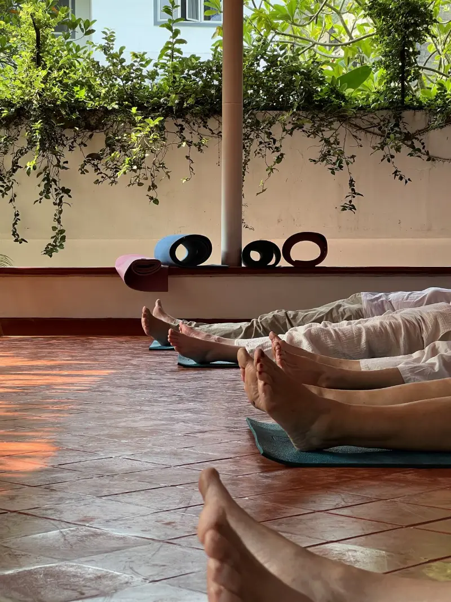

In short
Yes, for most travellers, if you give it two or three days and come for the right reasons. Fort Kochi is a small, walkable heritage town of colonial streets, art, food, the Chinese fishing nets and Kathakali, and it is the easiest base in Kerala. It is not a swimming beach, a party town or a place for a whirlwind half-day. People who slow down tend to love it; people who rush it tend to find it hot and touristy.
This is a fair question, and the internet does not always give it a fair answer. Travel sites tend to rave about Fort Kochi, and a certain kind of review calls it overrated. Both are true, depending on what you came for and how you spend your time.
We have taught yoga here for over fifteen years, to students from dozens of countries, and we hear how their stays went. Here is the honest version.
Who will love Fort Kochi
- People who like to walk. The old town is compact, flat and full of detail: Portuguese, Dutch and British buildings, churches, warehouses, courtyards, old trees. Almost everything is on foot.
- History and architecture lovers. St. Francis Church, where Vasco da Gama was first buried; the Paradesi Synagogue of 1568; Mattancherry Palace and its murals. Few places in India pack this much colonial and pre-colonial history into so small an area.
- Art lovers. Fort Kochi hosts the Kochi-Muziris Biennale, India’s largest contemporary art exhibition, and galleries and art cafés stay open between editions.
- Food lovers. Kerala breakfasts, fresh seafood from the nets, banana-leaf meals, and good vegetarian food if you know where to look.
- Anyone who wants a routine. Fort Kochi is at its best when you have a rhythm: an early class, a long breakfast, a sight, a rest through the heat, the sunset. It suits yoga students, long-stay travellers and remote workers far better than people ticking off sights.
Who may be disappointed
- Beach-holiday seekers. Fort Kochi Beach is a seafront promenade, not a swimming beach. If sand and sea are the point of your trip, go to Varkala, Kovalam or Marari instead.
- Nightlife seekers. Fort Kochi is quiet after about 10 pm. There are a few bars and restaurants, and that is about it.
- Half-day visitors. People who drive in from Ernakulam for a few hours, see the nets at noon, find Jew Town full of souvenir shops and leave, often go home unimpressed. Midday is the worst time to judge the town.
- Anyone arriving on a Friday. Mattancherry Palace and the Synagogue are both closed on Fridays, and the Synagogue on Saturdays too. Plenty of disappointment comes from that alone.
How many days to give it
| Time | What it allows |
|---|---|
| Half a day | Too little. You will see the nets and a church in the heat and miss the point. |
| One day | Possible if you start at dawn. Nets, churches, Mattancherry (Sunday to Thursday), Kathakali in the evening. |
| Two days | The right minimum. Time for the sights, a slow morning, a class, the sunset and a show. |
| Three to five days | Where the town starts to feel like yours. Daily practice, cafés, galleries, a day trip to the backwaters. |
| A week or more | For a yoga holiday or a working stay. Classes become a habit, and students who practise with us for more than a week get 30% off. |
What visitors wish they had known
From years of conversations after class, these come up again and again.
- Check the Friday closures before booking your dates. See Mattancherry between Sunday and Thursday.
- Stay in Fort Kochi itself, not Ernakulam. Ernakulam is the modern city across the water; Fort Kochi is where the atmosphere is. Our guide to where to stay explains the areas.
- Do things early. From about 11 am to 3 pm, most of the year, the heat makes sightseeing hard work. Locals rest; so should you.
- Walk the back lanes. The streets behind the famous ones are where people actually live, and where Fort Kochi feels least like a tourist site.
- Arrive by water. The Water Metro or the old ferry from Ernakulam is a far better introduction than the road. See Ernakulam to Fort Kochi.
- Watch the Kathakali make-up, not just the show. It starts about an hour before.

When it is at its best
November to February is the most comfortable and the busiest, with dry days around 30 °C. December brings the Christmas lights and the Cochin Carnival at New Year. March to May is hot and humid. June to September is the monsoon: wet, green, quiet and cheaper, and much loved by people who live here.
The verdict
Fort Kochi is not a place that impresses you in an hour. It is a place that grows on you over a few days, as you learn its rhythm. If you give it that time, get up early, walk the lanes and let the afternoons be slow, it is one of the most rewarding towns in South India. If you can only spare a few hours at midday, you may well wonder what the fuss is about.
One way to find the rhythm quickly is to start your first morning on a mat. Our daily two-hour class is open to complete beginners and has been the way into Fort Kochi for a great many travellers.
Start your first morning in Fort Kochi with us
Traditional Hatha Yoga every day, 7:30–9:30 am or 3:30–5:30 pm. ₹500 a class (a limited-time offer; normally ₹600, and ₹700 from November 2026). No booking and no experience needed; mats provided. Message us the evening before a morning class.
Once you have decided, things to do in Fort Kochi has a one-day and two-day plan, and a week of yoga in Fort Kochi is for anyone who wants to stay longer.
Common questions
Is Fort Kochi worth visiting?
Yes for most travellers, if you stay two or three days and come for the history, art, food, walking and slow pace. It is not a swimming beach or a nightlife destination, and a few hours at midday rarely shows it at its best.
How many days do you need in Fort Kochi?
Two days is the right minimum; three to five lets you settle into its rhythm. One day is possible if you start at dawn and plan around the Friday closures.
Is Fort Kochi better than Ernakulam to stay in?
For most visitors, yes. Fort Kochi is the historic, walkable quarter with the sights, cafés and atmosphere. Ernakulam is the modern commercial city across the water, better for shopping and transport connections.
Is Fort Kochi touristy?
Parts are, especially Jew Town’s souvenir shops and the waterfront at sunset. The residential lanes a few minutes away are quiet and very much lived in.
What is closed on Fridays in Fort Kochi?
Mattancherry Palace and the Paradesi Synagogue. The Synagogue is also closed on Saturdays and Jewish holidays, so plan Mattancherry for Sunday to Thursday.

Known to his students as Achu, Aksharanand trained in the Sivananda tradition and holds an Advanced Teacher Training Certificate. He has taught Hatha Yoga, pranayama, meditation and Vedanta philosophy in Fort Kochi for over fifteen years, across more than 5,000 group classes and seventy international teacher training batches.
More about Achu and the school · Book a class or ask a question